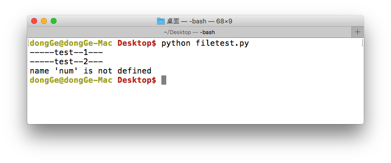
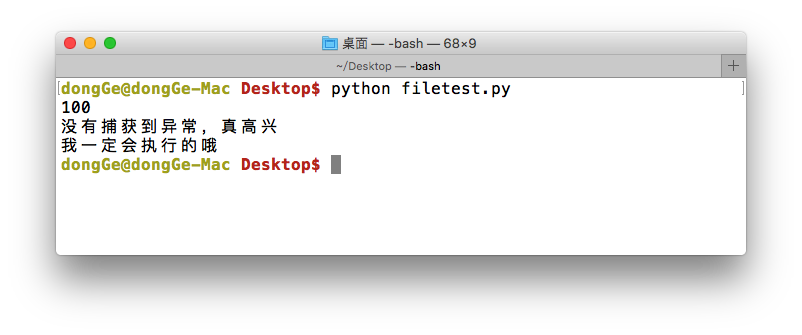

案例剖析
<1>捕获异常 try...except...
看如下示例:
try:
print '-----test--1---'
open('123.txt','r')
print '-----test--2---'
except IOError:
pass
运行结果:

说明:
- 此程序看不到任何错误，因为用except 接收了产生IOError错误，并添加了处理错误的方法
- pass 表示实现了相应的实现，但什么也不做；如果把pass改为print语句，那么就会输出其他信息
小总结:

- 把可能出现问题的代码，放在try中
- 把处理异常的代码，放在except中
<2>获取异常的信息描述
看如下示例:
try:
print num
except IOError:
print '产生错误了;'
运行结果如下:

想一想:
上例程序，已经使用except来捕获异常了，为什么还会看到错误的信息提示？
答:
except捕获的错误类型是IOError，而此时程序产生的异常为 NameError ，所以except没有生效
修改后的代码为:
try:
print num
except NameError:
print '产生错误了;'
运行结果如下:

想一想:
上例程序中，已经能够捕获到异常了，那么这个NameError异常，有没有一些信息描述呢？那又该怎样查看？
答:
在接收错误类型的后面定义一个变量(例如:errorMsg)用于接收具体错误信息, 然后将接收的错误信息打印即可
修改后的代码为:
try:
print num
except NameError, errorMsg:
print '产生错误了;', errorMsg
运行结果如下:

<3> except捕获多个异常
#coding=utf-8
try:
print '-----test--1---'
# 如果123.txt文件不存在，那么会产生 IOError 异常
open('123.txt','r')
print '-----test--2---'
# 如果num变量没有定义，那么会产生 NameError 异常
print num
except (IOError,NameError), errorMsg:
#如果想通过一次except捕获到多个异常可以用一个元组的方式
# errorMsg里会保存捕获到的错误信息
print errorMsg

注意：
- 如果想捕获所有的异常，可以省略 except后面的变量
- 但是这种方法不建议大家使用，会隐藏一些开发者没有想到的异常情况
<4> try...finally...
try...finally...语句用来表达这样的情况：
不管线捕捉到的是什么错误，无论错误是不是发生，这些代码“必须”运行，比如文件关闭，释放锁，把数据库连接返还给连接池等
demo:
import time
try:
f = file('poem.txt')
while True: # our usual file-reading idiom
line = f.readline()
if len(line) == 0:
break
time.sleep(2)
print line,
finally:
f.close()
print 'Cleaning up...closed the file'
说明:
程序读poem.txt文件中每一行数据打印，但是我有意在每打印一行之前用time.sleep方法暂停2秒钟。这样做的原因是让程序运行得慢一些。在程序运行的时候，按Ctrl-c中断/取消程序。
我们可以观察到KeyboardInterrupt异常被触发，程序退出。但是在程序退出之前，finally从句仍然被执行，把文件关闭。
<4> else
咱们应该对else并不陌生，在if中，它的作用是当条件不满足时执行的实行；同样在try...except...中也是如果，即如果没有捕获到异常，那么就执行else中的事情
try:
num = 100
print num
except NameError, errorMsg:
print('产生错误了:%s'%errorMsg)
else:
print('没有捕获到异常，真高兴')
finally:
print('我一定会执行的哦')
运行结果如下:
